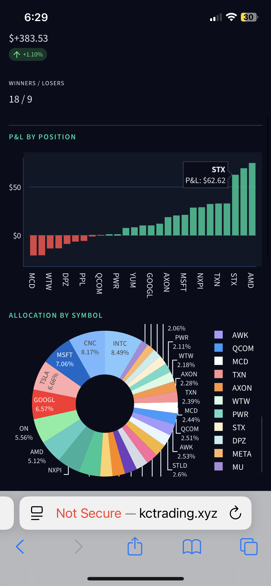
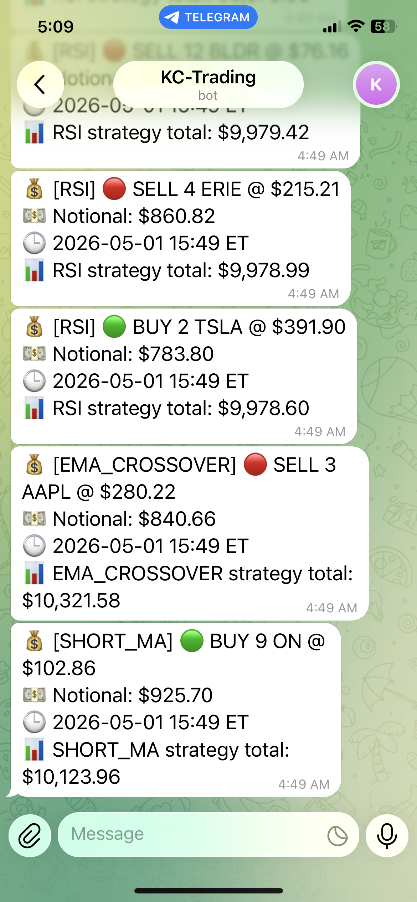

KC Trading
Alpaca paper trading automation
Available at: kctrading.xyz
Issue / Solution
The Issue: I wanted a robust environment to rigorously backtest and live-evaluate systematic trading strategies in real market conditions. However, doing so manually is highly prone to human error, emotional trades, and lag, while executing arbitrary scripts carries the extreme risk of accidentally touching real-money accounts. I needed a secure sandbox with built-in capital safety gates and continuous execution.
The Solution: I built KC Trading, an automated paper-only trading station deployed 24/7 on an Ubuntu VPS. It combines a continuous Python trading loop with a local SQLite state engine and an interactive Streamlit console. The broker wrapper strictly hardcodes Alpaca\'s simulation API (`paper=True`) to make real-money access impossible, while integrating automated Telegram notifications and risk-based circuit breakers for bulletproof safety.
Overview
KC Trading is a single-user paper trading platform built around Alpaca. The project has two long-running surfaces: a background trading bot and a Streamlit dashboard. The bot can keep evaluating markets on a VPS, while the dashboard gives me a browser-based command center for portfolio metrics, strategy allocation, backtests, logs, safety events, and server health.
System Architecture
The system isolates trading decisions, safety controls, and real-time visualization. It runs as two separate systemd services sharing an SQLite ledger in WAL (Write-Ahead Logging) mode.
System Architecture
Safety First
The broker wrapper hardcodes Alpaca\'s paper mode with paper=True, so real
execution is intentionally impossible by design. The system also includes a master kill
switch, daily loss limit, max drawdown limit, runaway trade-rate detection, and safety
events that require manual re-enable after an automatic stop. This made the project a
practical automation experiment instead of an uncontrolled trading script.
What I Built
- A Python trading loop that updates heartbeat state, evaluates strategies, checks safety gates, sends broker requests, and records trades.
- A Streamlit dashboard with account balance, buying power, P&L, portfolio equity, open positions, market snapshot, server status, logs, and config controls.
- Multi-strategy support for RSI, MACD, Bollinger Bands, EMA crossover, Momentum, and Short MA modules.
- Per-strategy capital allocation and daily top-N symbol picking from an S&P 500 universe.
- A backtest panel that compares strategy equity against a summed buy-and-hold baseline.
- Telegram notifications for trading events, backtest summaries, errors, and safety stops.
Dashboard & Controls
The command center is powered by Streamlit, offering rich visual data tables and charts. It communicates with the backend loop through WAL-mode SQLite reads and configuration updates.


Mobile Interface & Telegram Alerts
Continuous VPS execution requires remote monitoring. I built responsive views and custom integrations so that the entire trading engine can be safely managed from a phone on the move.


Architecture
SQLite is the shared state layer between the bot and dashboard. WAL mode lets the dashboard read state while the bot writes trades, account snapshots, config, logs, API call counts, heartbeats, and safety events. Alpaca handles paper brokerage and market data, yfinance supports market snapshots and backtests, and systemd runs both processes on an Ubuntu Vultr VPS.
I separated trading logic, broker integration, strategy modules, database access, notification delivery, and dashboard UI into different files. That separation made it easier to add strategies without rewriting the dashboard, and easier to keep the dangerous decisions centralized in the broker and safety layers.
Result
This became the infrastructure behind my systematic trading experiments. A paper-trading run recorded +15% total P&L while trading through a U.S.-Iran conflict period, which gave me evidence that the system could operate through stressful news conditions while preserving the safety boundary of simulated execution.
Stack
Python 3.12, Streamlit, alpaca-py, pandas, ta, Plotly, SQLite, psutil, yfinance, Telegram Bot API, systemd, Ubuntu, Vultr, uv.